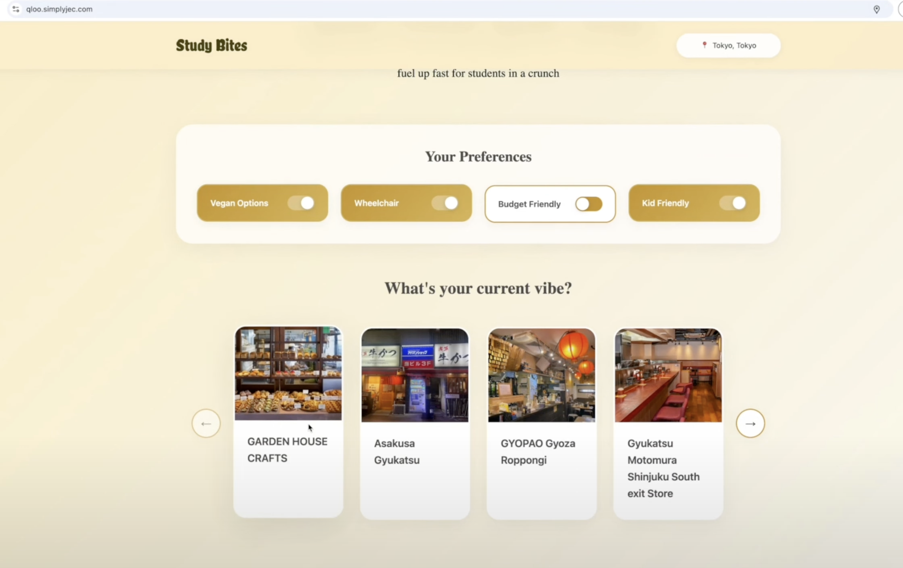
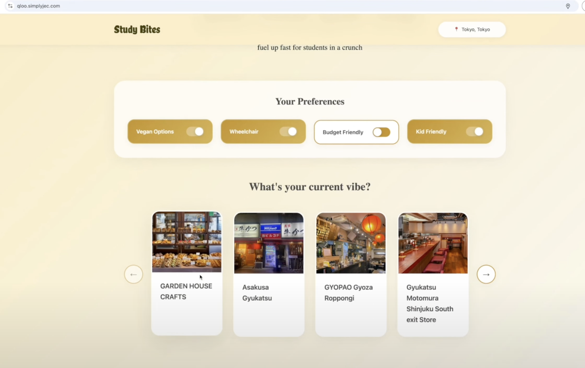
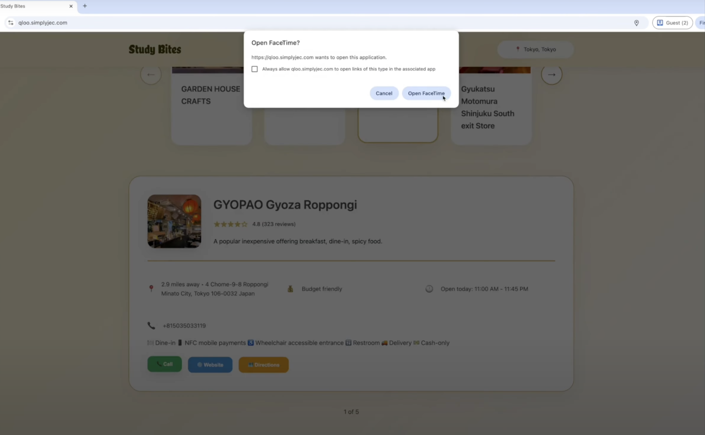
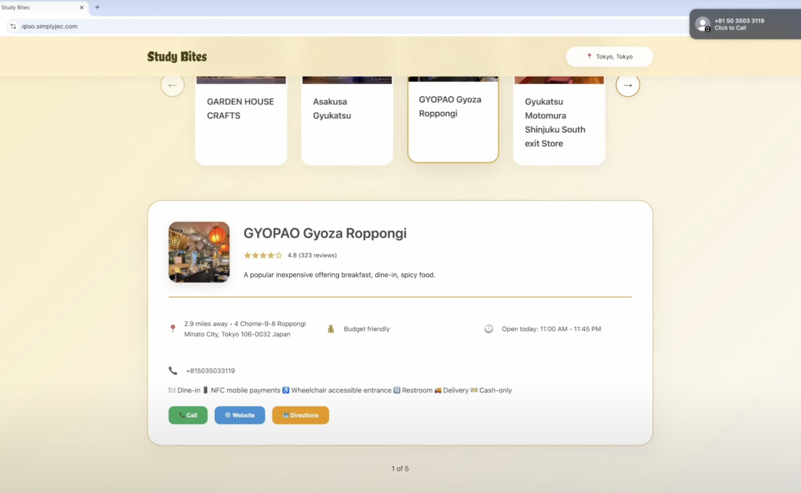
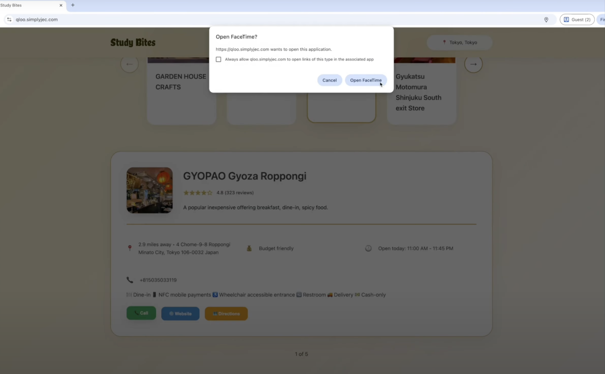
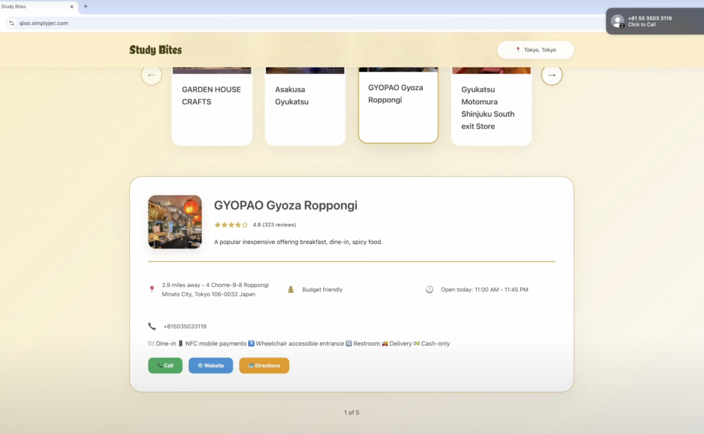
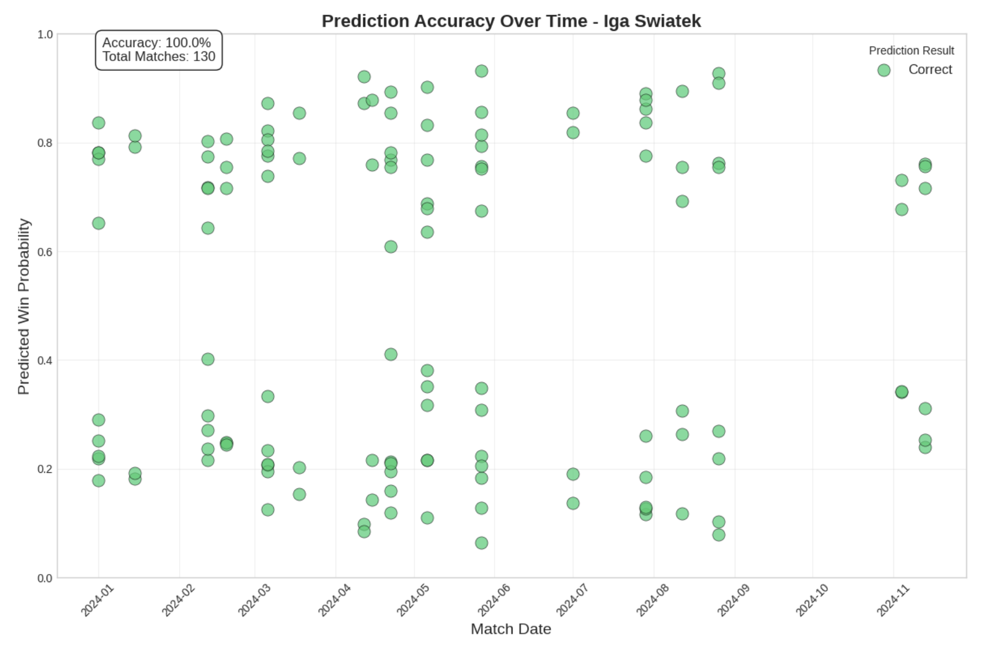
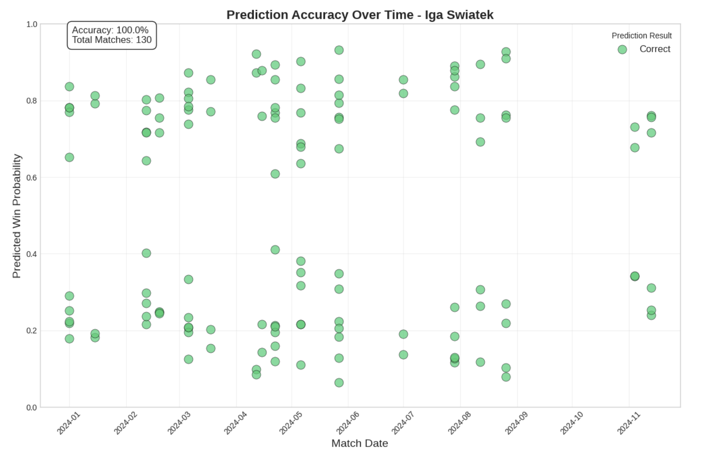

Full-Stack Development & AI
- Designed a platform of responsive UI matching students with personalized restaurant recommendations, together with ratings, distance, and actions to call, get directions, or visit the restaurant's website
- Developed a web app using Javascript, Flask, PyTorch and AI APIs for computer vision and deep learning
- Deployed on Gunicorn with Nginx as the reverse proxy on Azure Linux with GitHub Actions for CI/CD
Machine Learning Model
- Created a Machine Learning model using Pandas with Logistic Regression and Random Forest to predict WTA match outcomes, achieving a 9% increase in prediction accuracy
- Visualized results using Jupyter Notebook, showing feature importance, model confusion matrix, top players by prediction accuracy, and player-specific analysis of accuracy over time
 

 





 
